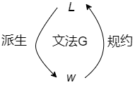
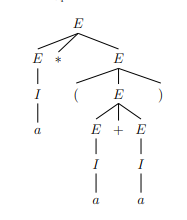
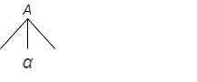
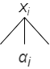
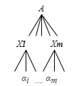
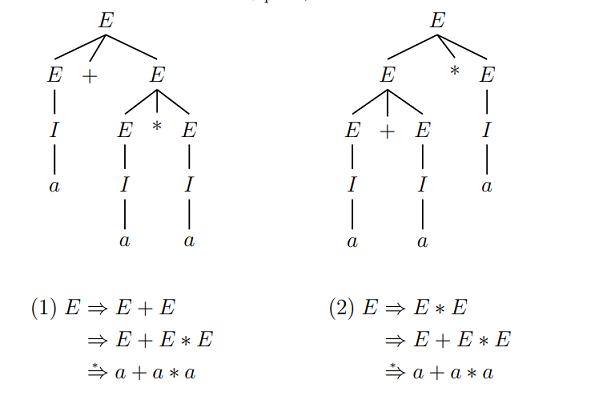
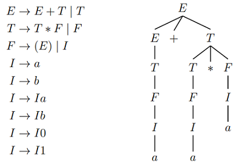

上下文无关文法
自然语言文法
一个英语语法的例子：
根据语法结构，可以从$ \langle sentense \rangle$推出一个句子：
很显然，这个句子是符合$\langle sentense \rangle$的句子结构的。从$ \langle sentense \rangle$到句子这一过程，使用的过程就是文法。
形式定义
接下来，由一个回文字符串的定义引出上下文无关文法的形式定义。
定义：如果字符串$w \in \Sigma^{\ast}$满足$w = w^R$，则称字符串$w$为回文（palindrome）。如果语言$L$中的字符串都是回文，则称$L$为回文语言。
例：$\Sigma = \lbrace 0,1 \rbrace$上的回文语言：
易证明$L_{pal}$是非正则的。可以用递归的形式来定义这种语言：
- $\epsilon,0,1$都是回文
- 如果$w$是回文，$0w0$,$1w1$也是回文
使用嵌套定义表示这种递归结构：
文法可以定义，表示，产生目标字符串。
定义：上下文无关文法（CFG，Context-Free Grammer），简称文法，$G$是一个四元组
- $V$：变元的有穷集，变元也成为非终结符或者语法范畴
- $T$：终结符的有穷集，且$V \cap T = \emptyset$
- $P$：产生式的有穷集，每个产生式包括
- 一个变元，称为产生式的头或左部
- 一个产生式符号$\to$，读作“定义为”
- 一个$(V \cup T)^{\ast}$中的符号串，称为体，或者右部
$S \in V$：初始符号，文法开始的地方
产生式$A \to \alpha$，读作$A$定义为$\alpha$
- 如果有多个$A$的产生式：可简写为：$A \to \alpha_1 \vert \alpha_2 \vert \dots \vert \alpha_n$
- 文法中变元$A$的全体产生式，称为$A$产生式
例：回文语言$L_{pal} = \lbrace w \in \lbrace 0,1\rbrace^{\ast} \vert w = w^R \rbrace$的文法可设计为：
字符使用的一般约定：
- 终结符：$0,1,\dots,a,b, \dots \rbrace$
- 终结符串：$\dots, w,x,y,z \dots$
- 非终结符：$S,A,B, \dots$
- 终结符或非终结符：$\dots,X,Y,Z$
- 终结符或非终结符组成的串：$\alpha,\beta,\gamma,\dots$
例：简化版的算术表达式：
- 运算只有加和乘(+/*)，参数仅为标识符
- 标识符：以$\lbrace a,b \rbrace$开头由$\lbrace a,b,0,1 \rbrace$组成的字符串，这样的表达式集合可用文法$G_{exp}$表示其中产生式$P$有10条产生式：
规约和派生
非形式定义：从字符串到文法变元的分析过程，称为递推推理或规约。从文法变元到字符串的分析过程，称为推导或派生。

- 规约：自底向上，由产生式的体向头的分析
- 派生：自顶向下，由产生式的头向体的分析
例：用算术表达式文法$G_{exp}$，将$a \ast (a+b00)$规约的过程
给产生式标号：
定义：若CFG $G = (V,T,P,S)$，设$\alpha,\beta,\gamma \in (V \cup T)^{\ast}$，$A \in V$，$A \to \gamma \in P$，那么称在$G$中由$\alpha A \beta$可派生出$\alpha \gamma \beta$，记为
相应的，称$\alpha \gamma \beta$可规约为$\alpha A \beta$.
- $\alpha A \beta \underset{G}{\Rightarrow} \alpha \gamma \beta$，即$A \to \gamma$的右部$\gamma$替换串$\alpha A \beta$中变元$A$得到串$\alpha \gamma \beta$
如果语境中$G$是已知的，可省略，记为$\alpha A \beta \Rightarrow \alpha \gamma \beta$
设$a1,\dots,a_m \in (V \cup T)^{\ast}, m \geq 1$，对$i = 1,\dots,m-1$如果有$a_i \underset{G}{\Rightarrow} a{i+1}$成立，即$a_1$经过0步或者多步派生可得到$a_m$，
，那么记为$a_1 \underset{G}{\Rightarrow} a_m$
若$\alpha$派生出$\beta$刚好经过了$i$步，可记为$\alpha \underset{G}{\stackrel{i}{\Longrightarrow}} \beta$
例：算术表达式$a \ast (b+ b00)$在文法$G_{exp}$中派生过程：
最左派生和最右派生
定义：为了限制派生的随意性，要求只替换符号串中最左边变元的派生过程，称为最左派生，记为
只替换最右的，称为最右派生，记为
- 任何派生都有等价的最左派生和最右派生
续例：
表达式$a \ast (b+ a)$在$G_{exp}$中的最左派生和最右派生分别是？
产生式集合
最左派生：
最右派生：
文法的语言
定义：CFG $G=(V,T,P,S)$的语言定义为：
那么符号串$w$在$\boldsymbol{L}(G)$中，要满足：
- $w$仅由终结符组成
- 初始符号$S$能派生出$w$
定义：如果$L$是某个CFG $G$定义的语言，即$L=\boldsymbol{L}(G)$，则称$L$为上下文无关语言（CFL，Context-Free Language）
- 上下文无关是值在文法派生的每一步符号串$\gamma$仅根据$A$的产生式派生，而无需依赖$A$的上下文$\alpha,\beta$
定义：若CFG $G = (V,T,P,S)$，初始符号$S$派生出来的符号串，称为$G$的句型。即：
- 如果$S \underset{lm}{\stackrel{\ast}{\Longrightarrow}} \alpha$，$\alpha$为左句型
- 如果$S \underset{rm}{\stackrel{\ast}{\Longrightarrow}} \alpha$，$\alpha$为右句型
- 只含终结符的句型，也称为$G$的句子。而$\boldsymbol{L}(G)$也就是文法$G$的全部句子，即语言。
例：给出语言$L = \lbrace w \in \lbrace 0,1 \rbrace^{\ast} \vert w \text{包含至少3个1} \rbrace$的文法：
定义产生式：
例：描述CFG $G=(\lbrace S \rbrace,\lbrace a,b \rbrace, \lbrace S \to aSb,S \to ab \rbrace,S)$定义的语言
所以$\boldsymbol{L}(G) = \lbrace a^nb^n \vert n \geq 1 \rbrace$
例：请为语言$L=\lbrace 0^n1^m \vert n \not= m \rbrace$设计文法
处理这种不相等的情况，往往分类讨论：
- $n \gt m$，0多1少，用$C$表示01相等的部分，A表示头部多处的0：
- $n \lt m$，0少1多，用$C$表示01相等的部分，B表示尾部多处的1：
例：设计$L_{eq}=\lbrace 0,1 \rbrace^{\ast} \vert w \text{中0和1个数相等} \rbrace$的文法
设计的产生式，必须每次递推都产生相等的0和1，$S \to 0S1 \vert 1S0 \vert \epsilon$，还要保证所有产生的0和1相等的串都能被递推（0或1同时作为首尾的情况），这里将他们相连即可。最终结果：
另外一种思路，所有出现0和1的串，要么0在前，要么1在前：
语法分析树
前例中$G_{exp}$推导算术表达式$a \ast (a+a)$的过程可以描述成一个树形结构，在分析字符串和文法语言表示的关系中非常有用。

形式定义
定义：
CFG $G = (V,T,P,S)$的语法分析树（语法树或派生树）为：
- 每个内节点标记为$V$中的变元符号
- 每个叶节点标记为$V \cup T \cup \lbrace \epsilon \rbrace$中的符号
- 如果某内节点标记是$A$，其子节点从左至右分别为：那么若由$X_i = \epsilon$，则$\epsilon$是$A$的唯一子节点，且$A \to \epsilon \in P$
定义：语法树的全部叶节点从左至右连接起来，称为该数的产物或结果，如果根节点是初始符号$S$，叶节点是终结符或$\epsilon$，那么改树的产物属于$\boldsymbol{L}(G)$
定义：语法树中标记为$A$的内节点及其全部子孙节点构成的子树，称为$A$子树。
语法树和派生的等价性
定理：CFG $G = (V,T,P,S)$，且$A \in V$，那么文法$G$中
当且仅当$G$中存在以$A$为根节点产物为$\alpha$的语法树。
证明：
【充分性】对$A \underset{}{\stackrel{j}{\Longrightarrow}}\alpha$的步骤数$j$归纳证明：
归纳基础：$j=1$时，$A \Rightarrow \alpha$，有$A \to \alpha \in P$，可构造：
归纳递推：假设$j \leq n$时命题成立，当$j=n+1$时，$A \underset{}{\stackrel{n+1}{\Longrightarrow}} \alpha$的派生过程为：
其中$A \to X_1 \dots X_m \in P$，而$X_i$若非终结符，一定有$X_i \underset{}{\stackrel{\ast}{\Longrightarrow}} \alpha_i$且不超过$n$步，由归纳假设存在：
 因此可以构造以$A$为跟，以$X_i$为子树（或叶子）的语法树，其产物刚好为$\alpha$

【必要性】对语法分析树的内节点数$j$归纳证明：
- 归纳基础：$j=1$时，唯一的内节点是根节点
有$A \to \alpha \in P$，那么$A \underset{}{\stackrel{\ast}{\Longrightarrow}} \alpha$ - 归纳递推：假设$j \leq n$时命题成立。当$j=n+1$，跟节点$A$儿子为$X_1,X_2,\dots,X_m$，则 而$X_i$子树（或叶子）内节点数都不超过$n$，由归纳假设由从左至右连接$\alpha_i$刚好为树的产物$\alpha$，所以有
由于每个CFG派生都有最左派生和最右派生，所以每棵语法分析树都有唯一的最左和最右派生。
给定CFG $G = (V,T,P,S),A \in V$，以下命题等价
- 通过递归推理，确定串$w$在变元$A$的语言中
- 存在以$A$为根节点，产物为$w$的语法分析树
- $A \underset{}{\stackrel{\ast}{\Rightarrow}} w$
- $A \underset{lm}{\stackrel{\ast}{\Rightarrow}} w$
- $A \underset{rm}{\stackrel{\ast}{\Rightarrow}} w$
语法和语言的歧义性
定义：如果CFG G使某些符号串中有两棵不同的语法分析树，则称该文法$G$是歧义的
例：算术表达式的文法$G_{exp}$中，对句型$a + a \ast a$有下面两棵语法树

由于实际运算要先乘除，后加减，所以左侧的文法是正确的表示。
有些文法的歧义性，可以通过重新设计文法消除歧义性
续例：文法$G{exp}$重新设计为$G{exp^{\prime}}$可消除歧义。

定义：定义同样的语言可以有多个文法，如果CFL L的所有文法都是歧义的，那么称语言$L$是固有歧义的。
- 固有歧义的语言存在，例如： 任何形如$a^nb^nc^n$的串，无论如何设计，都会有两棵语法树。
- 判定“任何给定CFG G是否有歧义”是一个不可判定问题
文法的化简和范式
化简可以提升文法分析的效率，如编译器设计和自然语言处理中的典型问题：“给定CFG G和串$w$，判断$w \in \boldsymbol{L}(G)$”，冗余的文法规则会降低文法分析的效率。
例：
其中从开始符号$S$无法派生到$A$，而$B$无法产生不含非终结符的串，所以他们对文法定义的语言没有贡献。而$C \to D$和$D \to \epsilon$只是增加了推导过程，所以对分析过程也是有害的。
文法化简是以不改变语言为前提，化简文法和限制文法的格式，最终转化为范式的过程。
化简
文法化简分为三个过程：
- 消除无用符号：对文法定义语言没有贡献的符号
- 消除$\epsilon$产生式：$A \to \epsilon$（得到语言$L - \lbrace \epsilon \rbrace$）
- 消除单元产生式：$A \to B$
消除无用符号
定义：CFG $G=(V,T,P,S)$，符号$X \in (V \cup T)$：
- 如果$S \underset{}{\stackrel{\ast}{\Rightarrow}} \alpha X \beta$，称$X$是可达的
- 如果$\alpha X \beta \underset{}{\stackrel{\ast}{\Rightarrow}} w \ (w \in T^{\ast})$，称$X$是产生的
- 如果$X$同时产生和可达的，即：则称$X$是有用的，否则称$X$是无用符号。即：如果一个符号无法从开始符号派生而来，或无法产生终结符串，他就是无用的。
计算产生的符号集：
- 每个$T$中的符号都是产生的
- $A \to \alpha \in P$且$\alpha$中符号都是产生的，则$A$是产生的
计算可达的符号集：
- 符号$S$是可达的
- $A \to \alpha \in P$且$A$是可达的，则$\alpha$中符号都是可达的
计算所有既是产生也是可达的符号集后，排除剩下的符号，即可获得不带无用符号的CFG。
必须先消除所有非“产生的”符号，再消除全部非“可达的”符号，否则消除可能不完整。
例：
如果先消除非“可达的”，不会消除任何符号，然后消除非“产生的”，只会消除掉$B$，于是得到：
显然，此时$A \to b$也是无没有贡献的，$A,b$也是无用符号。该用先消除非“产生的”，先会消除$B$；再消除非“可达的”，消除$A,b$，最后得到：
这是一条正确的结果。
定理：每个非空的CFL都能被一个不带无用符号的CFG定义。
消除$\epsilon$产生式
定义：文法中形如$A \to \epsilon$的产生式称为$\epsilon$-产生式。如果变元$A \underset{}{\stackrel{\ast}{\Rightarrow}} \epsilon$，称$A$是可空的。
- $\epsilon$产生式在文法定义语言时，除产生空串外没有其他帮助
- 对于CFL $L$，消除其文法中全部的$\epsilon$-产生式，得到语言$L - \lbrace \epsilon \rbrace$
确定“可空变元”
- 如果$A \to \epsilon$，则$A$是可空的
- 如果$B \to \alpha$，且$\alpha$中的每个符号都是可空的，则$B$是可空的
替换产生式：
将含有可空变元的一条产生式$A \to X_1 X_2 \dots X_n$，用一组产生式$A \to Y_1 Y_2 \dots Y_n$，其中：
- 若$X_i$不是可空的，$Y_i$为$X_i$
- 若$X_i$是可空的，$Y_i$为$X_i$或$\epsilon$
- 但$Y_i$不能全为$\epsilon$
定理：任何CFG $G$，都存在一个不带无用符号和$\epsilon$-产生式的CFG $G^{\prime}$，使$\boldsymbol{L}(G^{\prime}) = \boldsymbol{L}(G) - \lbrace \epsilon \rbrace$
例：消除CFG $G=(\lbrace S,A,B \rbrace, \lbrace a,b \rbrace, P, S)$的$\epsilon$-产生式。
很明显$A,S,B$都是可空变元。先删掉所有的空产生式。对于$S \to AB$，分$A$为$\epsilon$，$B$为$\epsilon$和$AB$均为$\epsilon$，推导出$S \to AB \vert B \vert A$，同理$A \to AaA \vert aA \vert Aa \vert a$，$B \to BbB \vert bB \vert Bb$。
最终得到消除$\epsilon$产生式：
单元产生式
形如$A \to B$的产生式，仅仅增加了文法推导的步骤，需要删掉。首先要确定“单元对”，然后消除单元产生式。
确定“单元对”：
如果有$A \underset{}{\stackrel{\ast}{\Rightarrow}} B$，则称$[A,B]$为单元对
- $A \to B \in P$，则$[A,B]$是单元对
- 若$[A,B]$和$[B,C]$都是单元对，则$[A,C]$是单元对
消除单元产生式：
- 删除全部形如$A \to B$的单元产生式
- 对每个单元对$[A,B]$，将$B$的产生式复制给$A$
例：消除文法的单元产生式：
首先找出“单元对”：$[S,A],[S,B]$，删除单元产生式$S \to A \vert B$，将单元产生式中$A,B$的产生式复制给$S$，得到：
文法化简的可靠顺序：
- 消除$\epsilon$-产生式
- 消除单元产生式
- 消除非产生的无用符号
- 消除非可达的无用符号
转化为范式
因为文法格式非常自由，仅仅化简后还不便于工程上的自动处理，还需化简之后，转化为特定格式的文法。常用两种范式：
- 乔姆斯基范式（CNF,Chomsky Normal Form）
- 格雷巴赫范式（GNF,Greibch Normal Form）
CNF
定理：每个不带$\epsilon$的CFL都可以由这样的CFG $G$定义，$G$中每个产生式的形式都为：
这里$A,B$和$C$都是变元，$a$是终结符
- 利用CNF派生产生的语法树的内节点构成一棵二叉树，派生长度为$n$的串，刚好需要$2n-1$步
- 因此存在算法判断任意字符串$w$是否在给定的CFL中
- 利用CNF的多项式时间解析算法 - CYK算法
CFG转为CNF的方法：
- 将产生式 中每个终结符$a$替换为新变元$C_a$
- 增加新产生式
- 引入新变元$D1,D_2,\dots D{m-2}$，将产生式 替换为一组级联产生式
例：CFG $G=(\lbrace S,A,B \rbrace, \lbrace a,b \rbrace,P,S)$，产生式集合$P$为：
设计等价的CNF文法。
先替换全部的终结符：
其中不满足CNF的只有$A \to C_bAA$和$B \to C_aBB$，替换得到：
GNF
定理：每个不带$\epsilon$的CFL都可以这样的CFG $G$定义，$G$中每个产生式的形式都为
其中$A$是变元，$a$是终结符，$\alpha$是零或多个变元的串
- GNF每个产生式都会引入一个 终结符
- 长度为$n$的串的派生恰好是$n$步
例：将以下文法转化为GNF
因为$A$,$B$的产生式已经是符合GNF文法的，因此，直接用$A$产生式替换$S$的产生式：
定义：文法中形式为$A \to A\alpha$的产生式，称为直接左递归
一般直接坐递归的变元如果是“产生的”，一般是如下定义：
这种产生式，可以推出
为了消除直接左递归，可以定义$A$的产生式为：
消除直接左递归：
- 若$A$产生式其中$\alpha_i \not= \epsilon$，$\beta_j$不以$A$开始
- 引入新变元$B$，并用如下产生式替换
定义：如果文法中由形式为
的产生式，称为间接左递归
- 会有$A \Rightarrow B\alpha \Rightarrow A\beta\alpha$，无法通过代换消除递归
消除间接左递归
- 将文法中变元重命名为$A_1,A_2,\dots,A_n$
- 通过代入，使产生式都形如但要求$i \leq j$
- 消除直接左递归$A_i \to A_i\beta$，再代入其他产生式
例：将下列文法转化成GNF
先消除间接左递归，对所有变元标号：
重新代入产生式：
检查$A_i \to A_j \alpha$中$i \leq j$，其中$A_3 \to A_1A_2 \vert a$不满足，所以带入$A_1$的产生式，变为$A_3 \to A_2A_3A_2 \vert a$，此时依然不满足$i \leq j$，继续代入$A_2$产生式，得到
此时$A_3$出现了直接左递归，利用消除直接左递归公式：
$A_3$代入到$A_2$，$A_2$代入到$A_1$，$A_1$导入到$B_1$，消除直接左递归后的产生式：